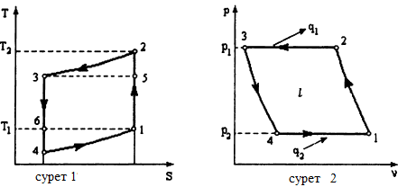

Берілгені:
Ауалы мұздатқыш қондырғысында мұздатқыш камерасындағы ауа p = 0.2 МПа қысым және t1 = -20℃ температураға ие.
Компрессорда p1 = 0.5 МПа қысымға дейін адиабаталық сығылудан кейін ауа салқындатқышқа бағытталады,
мұнда оның температурасы t3 = +15℃ дейін төмендейді. Турбодетандерде бастапқы қысымға дейін ауаның адиабаталық ұлғаюы жүреді.
Мұздатқыш камерасында ауа t 1 = -20℃ температураға дейін қыздырылады және кейін қайтадан
компрессорға келіп түседі (1 және 2 сурет).

*Жауаптар ондықтарға дейін жуықталады (Мысал: 2.9)